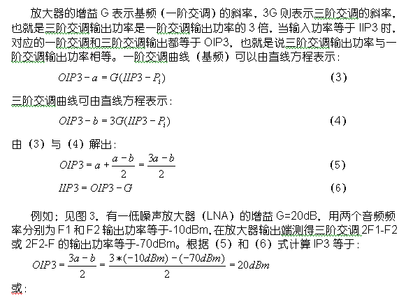

三阶截取点(IP3) 是表示放大器线性度或失真性能的参数。IP3越高表示线性度越好和更少的失真。
IP3通常用两个输入音频测试。图3所示为双音频IP3测试在频域的情况。放大器的输入是两个正弦波(基波),本例中一个在900MHz另一个在901MHz。放大器的输出是两个欲得到的有用信号。因为放大器不是理想线性的,它还产生了两个三阶互调(IM3)产物。IM3通常以dBm给出。这里显示的IM3失真产物在频率上距离有用信号非常的近因此不能用滤波器轻易地去除它们。为了减少三阶失真产物,必需提高IP3规范。
三阶互调产物是由放大器或混频器的非线性特性造成的对两个音频输入相互混频(或调制)的结果。这两个IM3产物是：
fIM3_1= 2f1-f2, 例如900*2-901=899MHz。
fIM3_2=2f2-f1,例如901*2-900=902MHz。
图2反映了基频（一阶交调）与三阶交调增益曲线，当输入功率逐渐增加到IIP3时，基频与三阶交调增益曲线相交，对应的输出功率为OIP3。IIP3与 OIP3分别被定义为输入三阶交调载取点（Input Third-order Intercept Point）和输出三阶交调载取点（Output Third-order Intercept Point）。
